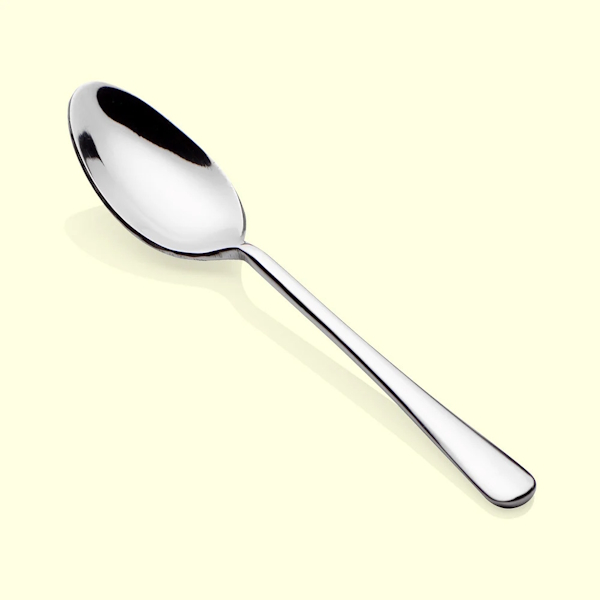

A spoon is a utensil with a small, shallow bowl attached to a handle, used for eating, serving, or mixing food. It’s one of the most common tools in kitchens worldwide.
- Eating foods like soup, cereal, or desserts.
- Cooking tasks such as stirring sauces or mixing ingredients.
- Serving dishes like rice, stew, or pudding.
Primary Uses:
- Teaspoon: Small, used for stirring tea or measuring ingredients.
- Tablespoon: Larger, often used for serving or measuring.
- Soup spoon: Rounder bowl, designed for sipping soup.
- Dessert spoon: Slightly larger than a teaspoon, used for sweets.
- Wooden spoon: Common in cooking, especially for stirring hot dishes.
Types of Spoons:
Other Meanings:
- As a verb, “to spoon” means to scoop food with a spoon or, informally, to cuddle closely while lying down.
- In history, elaborately carved spoons were sometimes given as tokens of affection.
Cultural Notes
- In Western dining, spoons are paired with forks and knives, but in many Asian cultures, spoons are the main utensil for rice and soup.
- Specialized spoons exist for tasks like measuring (measuring spoons), straining (slotted spoons), or serving (ladles).